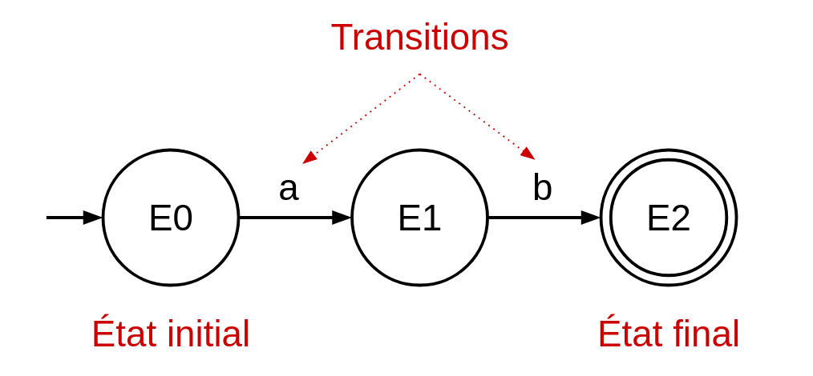
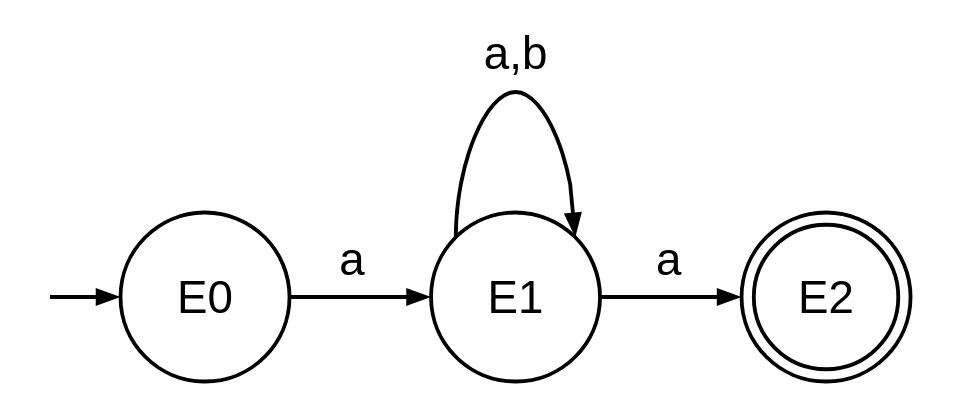
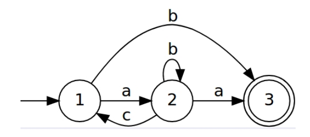

Chapitre 1 - Langages Réguliers
Dernière mise à jour : 11/09/2025
Langage, Syntaxe, Sémantique
Un langage est un ensemble de mots, fini ou infini, qui peut être formé à partir d'un alphabet fini. Par exemple, la langue française est un langage permettant de représenter un ensemble de mots comme "chat", "chien", "maison", etc., ces mots étant formés à partir de l'alphabet romain.
La syntaxe est la forme ou la structure d'un langage. Elle définit un ensemble de règles permettant de construire des mots valides pour un langage donné. Par exemple, la syntaxe du langage de programmation Java permet de construire des mots représentant des variables avec la forme int x = 5.
La sémantique est le sens ou l'interprétation d'un langage. Elle définit ce que les mots d'un langage signifient. Par exemple, si l'on reprend le mot en Java int x = 5, la sémantique va s'assurer que la valeur à droite (5) correspond bien au type défini à gauche (int, un type entier).
Il se peut qu'un mot d'un langage soit syntaxiquement valide, mais sémantiquement invalide. Par exemple, le mot int x = "test" pourrait être syntaxiquement valide car il respecte la structure d'une déclaration de variable définie en Java. Cependant, ce mot serait sémantiquement invalide, car "test" est une chaîne de caractères (String) et non un entier (int). Donc, le type défini pour la variable x ne correspondrait pas au type de sa valeur.
Langage Fini
Un langage fini est un langage dont tous les mots peuvent être énumérés exhaustivement. Par exemple, le langage français est un langage fini, car on pourrait énumérer tous les mots qui existent dedans. Une preuve est qu'on peut prendre un dictionaire moderne, et y retrouver tous les mots du langage français. Pour représenter formellement un langages fini, nous allons utiliser un ensemble délimité par des crochets { }, contenant tous les mots du langage séparés par des virgules. Si l'on reprend l'exemple du langage français, on le représenterait de la façon suivante :
{ le, la, les, chien, chat, bleu, rouge, ... }
Il est évident que cette représentation formelle est raccourcie, car il y a énormément de mots dans le langage français et ils ne peuvent pas tous être repris ici. Cependant, tant qu'un langage contient un ensemble fini (mais potentiellement énorme) de mots, il entre dans la catégorie des langages finis. De plus, nous pouvons également utiliser le même formalisme pour représenter l'alphabet d'un langage, avec un symbole Σ (sigma) représentant l'ensemble. Donc, on peut représenter l'alphabet du langage français de la façon suivante (les symboles de type "à", "é", "è" sont omis pour des raisons de simplicité) :
Σ = { a, b, c, d, e, f, g, h, i, j, k, l, m, n, o, p, q, r, s, t, u, v, w, x, y, z }
Voici quelques autres exemples de langages finis :
- Le langage anglais, qui comprend également un ensemble fini de mots :
{ this, there, that, orange, apple, house, garden, ... }.
- Le langage ChienChat, un sous-ensemble du langage français qui comprend uniquement les mots "chien" et "chat" :
{ chien, chat }.
- Le langage des mots en binaire ayant une taille maximale de 2 caractères :
{ 0, 1, 00, 11, 01, 10 }. Il est important de noter que si la taille maximale des mots n'était pas imposée ici, ce langage ne serait pas fini car il y aurait une infinité de combinaisons de mots possible : { 0, 1, 01, 001, 1011, 10101, ... }.
Les langages finis sont des sous-ensembles des langages réguliers. Un langage fini peut donc être représenté par une expression régulière ou un automate fini, et est donc également considéré comme un langage régulier.
Langage Régulier
Un langage régulier est un langage qui peut être représenté par une expression régulière ou un automate fini. Souvent, on prouve qu'un langage est régulier en le représentant par une de ces deux formes-ci.
Un langage régulier n'est pas nécessairement un langage fini. Ceci est dû au fait que les langages finis sont des sous-ensembles des langages réguliers, donc on peut très bien trouver un langage régulier qui n'est pas fini.
Expression Régulière
Une expression régulière, également appellée regex (regular expression en anglais), est une représentation de la structure des mots qui peuvent être générés pour un langage régulier donné. Une expression régulière consiste en une des deux manières de représenter un langage régulier, l'autre étant d'utiliser un automate fini. Le concept d'expression régulière que nous voyons dans ce cours est similaire au concept d'expression régulière utilisé dans des langages de programmation pour le pattern matching. Cependant, elle est sous une forme un peu plus mathématique.
Afin de comprendre les éléments syntaxiques utilisés dans une expression régulière, nous considérons l'alphabet Σ = { a, b }.
Symbole : une expression régulière peut simplement consister en une ou plusieurs suites de symboles de l'alphabet, indiquant que le mot généré contiendra ce ou ces symboles.
- L'expression régulière
a peut générer le mot a.
- L'expression régulière
b peut générer le mot b.
"ET" logique : une expression régulière peut contenir un "ET" logique, représenté par un point. Il indique qu'il faut concaténer la partie à gauche et la partie à droite du point pour générer un mot. Souvent, le point peut être omis.
- L'expression régulière
a.b peut générer le mot ab.
- L'expression régulière
a.b.a peut générer le mot aba.
"OU" logique : une expression régulière peut contenir un "OU" logique, représenté par un symbole | (pipe). Il indique qu'il faut choisir entre la partie à gauche et la partie à droite du pipe pour générer un mot.
- L'expression régulière
a | b peut générer soit le mot a, soit le mot b.
- L'expression régulière
ab | b | baab peut générer soit le mot ab, soit le mot b, soit le mot baab.
Étoile de Kleene : une expression régulière peut contenir une étoile de Kleene, représentée par un symbole * (asterisk). Elle indique que l'élément qui la précède peut être répété soit zero fois, soit plusieurs fois. Si l'étoile de Kleene d'une expression régulière est répétée zéro fois, l'expression régulière générera le mot vide : il est représenté par le symbole ε (epsilon). Une étoile de Kleene peut répéter plusieurs éléments s'ils sont mis entre parenthèses.
- L'expression régulière
a* peut générer une infinité de mots : { ε, a, aa, aaa, ..., aaaaaaa, ... }. On n'oublie pas d'inclure le mot vide ε si l'élément précédant l'étoile de Kleene est répété zéro fois.
- L'expression régulière
aba* peut générer une infinité de mots : { ab, aba, abaa, abaaa, ..., abaaaaaa, ... }. Ici, l'étoile de Kleene s'applique uniquement sur le dernier élément a de l'expression régulière. On remarque que le premier mot généré est ab et non ab.ε (ou abε). Ceci est dû au fait qu'on peut omettre le mot vide s'il est concaténé avec d'autres éléments qui ne sont pas vides.
L'étoile de Kleene apporte le principe d'infinité aux expressions régulières ; Donc, une expression régulière contenant une étoile de Kleene ne pourra jamais faire partie d'un langage fini car on ne peut pas énumérer tous les mots du langage représenté.
Parenthèses : une expression régulière peut contenir des parenthèses, permettant de regrouper des éléments ensemble.
- L'expression régulière
(ab | b).a peut générer les mots { aba, ba }. Il faut d'abord choisir entre ab ou b dans l'expression, et ensuite concaténer a.
- L'expression régulière
(ab)* peut générer une infinité de mots : { ε, ab, abab, ababab, ..., abababababab, ... }. On remarque que l'étoile de Klenne s'applique sur tous les éléments entre parenthèses, et non uniquement sur le dernier élément.
- L'expression régulière
(a | b)* peut générer une infinité de mots : { ε, a, b, ab, ba, bbaabb, ... }. Ici, à chaque fois qu'on répète une nouvelle fois l'étoile de Kleene, on peut re-choisir entre a ou b.
Symbole + : similaire à l'étoile de Kleene, indique que l'élément qui précède peut être répété soit une fois, soit plusieurs fois. Vu que l'élément ne peut pas être répété zéro fois, le mot vide ne fera pas partie des mots générés.
- L'expression régulière
b+ peut générer une infinité de mots : { b, bb, bbb, ..., bbbbbbb, ... }.
- L'expression régulière
(bab)+ peut générer une infinité de mots : { bab, babbab, ... }.
Symbole ? : indique que l'élément qui précède peut être répété soit zéro fois, soit une fois. L'élément ne peut pas être répété plusieurs fois ici.
- L'expression régulière
a? peut générer les mots { ε, a }. Vu que l'ensemble des mots généré est fini, le langage représenté par cette expression régulière est donc un langage fini.
- L'expression régulière
(bb)?a* peut générer une infinité de mots : { ε, bb, bba, a, bbaaaa, aaaaaaaa, ... }.
Exposant : indique le nombre de fois qu'un élément est répété. Si une portée est indiquée, l'élément peut être répété entre les valeurs de la portée.
- L'expression régulière
a^3 peut générér le mot aaa.
- L'expression régulière
a^[2-5] peut générér les mot { aa, aaa, aaaa, aaaaa }. Cette expression peut se lire comme "a apparait entre 2 et 5 fois".
Automate Fini
Un automate fini est une représentation schématique d'un langage régulier. Il s'articule autour d'états et de transitions, ces dernières permettant de passer d'un état à un autre. Un automate fini contient un et un seul état dit initial, et au moins un état dit final.
Afin de comprendre le fonctionnement d'un automate fini, reprenons l'alphabet Σ = { a, b }. Supposons que l'on aimerait représenter le langage ab, permettant de générer le mot ab. Voici son automate fini :

On remarque plusieurs éléments :
- L'état initial à gauche (E0), représenté par un cercle et une flèche entrante. C'est à partir de cet état qu'il faut "entrer" dans l'automate, lorsqu'on commence à lire un mot.
- L'état final à droite (E2), représenté par un double cercle. C'est à partir de cet état qu'il faut "sortir" de l'automate, lorsqu'on a terminé de lire un mot.
- Un autre état (E1), permettant de transitionner entre l'état initial (E0) et l'état final (E2).
- Des transitions (a et b), permettant de passer d'un état à un autre.
Donc, pour lire un mot au travers de cet automate, on entre par l'état initial E0. Ensuite, on lit un caractère "a" et on passe vers l'état E1. Étant à présent dans l'état E1, on peut encore lire un caractère "b" et on passe vers l'état E2. Vu que l'état est final et qu'il n'y a pas d'autres transitions sortantes, on a terminé de lire le mot et on peut sortir de l'automate. Ayant lu un "a" et puis un "b", on les concatène pour former le mot "ab".
Voyons à présent un automate un peu plus avancé, permettant de représenter le langage des "mots qui commencent et terminent par a" (toujours sur l'alphabet Σ = { a, b }) :

On remarque que l'état E1 a une transition qui va vers lui-même, signifiant que tant qu'on est dans l'état E1, on peut répéter cette transition plusieurs fois. L'intitulé de cette transition est "a,b", signifiant que l'on peut choisir entre le caractère "a" ou le caractère "b" quand on transitionne. En comparaison avec les expressions régulières, ce type de transition correspond à l'étoile de Kleene. Donc, la transition "a,b" sur l'état E1 correspondrait à l'expression régulière (a | b)*. De façon plus générale, cet automate fini correspond à l'expression régulière a(a|b)*a, le langage des mots qui commencent et terminent par "a" sur l'alphabet { a, b }.
Vu qu'un automate fini permet de prouver qu'un langage est régulier, tout automate fini peut être représenté par une expression régulière (et inversement).
Il existe plusieurs propriétés pour les automates finis :
- Déterministe : un automate fini est dit déterministe si pour tout état, il n'existe pas plusieurs fois la même transition partant d'un même état.
- Non-déterministe : un automate fini est dit non-déterministe si au moins un de ses états comporte une même transition plusieurs fois, ou bien contient des "ε transitions".
- Minimal : un automate fini est dit minimal s'il contient un nombre minimal d'états.
- Complet : un automate fini est dit complet s'il définit de chaque état une transition pour chaque symbole de l'alphabet utilisé.
- Complément : le complément d'un automate fini (étant déterministe et complet) est obtenu en remplacant ses états finaux par des états non-finaux, et inversement.
Le complément d'un langage régulier est toujours régulier. Si un langage n'est pas régulier, il ne peut pas être représenté par un automate fini (ou une expression régulière), et donc son complément non plus.
Exercices
1. Vrai ou Faux ?
Pour chacune des affirmations suivantes, déterminez si elles sont vraies ou fausses et justifiez.
1.1. Si la sémantique d'un mot est invalide, alors sa syntaxe l'est aussi.
Faux
1.2. L'alphabet utilisé par un langage peut être infini.
Faux
1.3. L'ensemble des mots d'un langage peut être infini.
Vrai
1.4. Tous les mots d'un langage régulier peuvent être énumérés exhaustivement.
Faux
1.5. Tout langage fini est régulier.
Vrai
1.6. Il se peut qu'un langage régulier ne soit pas fini.
Vrai
1.7. Si l'on peut représenter un langage avec une expression régulière, alors il est fini.
Faux
1.8. Tout langage fini peut être représenté par une expression régulière.
Vrai
1.9. On ne peut pas représenter un langage régulier avec un automate fini.
Faux
2. Classification de Langages
Soit les langages suivants définis sur l'alphabet Σ = { 0, 1 }. Déterminez si ce sont des langages réguliers et/ou finis. Utilisez les ensembles, expressions régulières, ou automates finis pour justifier vos réponses.
2.1. Le langage des mots d'au plus deux symboles.
Le langage est fini, car tout ses mots peuvent être énumérés exhaustivement :
{ ε, 0, 1, 00, 11, 01, 10 }
On n'oublie pas le mot vide ε, car "au plus" est une borne supérieure et il n'y a pas de borne inférieure quant à la longueur d'un mot du langage.
Le langage est également régulier, car il est fini. On peut d'ailleurs représenter le langage avec une expression régulière :
ε | 0 | 1 | 00 | 11 | 01 | 10
2.2. Le langage des mots de taille 2.
Le langage est fini (et en conséquence régulier), car tout ses mots peuvent être énumérés exhaustivement :
{ 00, 11, 01, 10 }
2.3. Le langage des mots qui commencent et finissent par "1".
Le langage n'est pas fini, car tout ses mots ne peuvent pas être énumérés exhaustivement. On ne peut pas construire un ensemble fini car il peut y avoir une infinité de "0" ou de "1" entre le premier et dernier "1". Pour vérifier si le langage est régulier (mais pas fini), on va essayer de trouver une expression régulière pour le représenter:
1(0|1)*1 | 1
Le langage est régulier, car on a trouvé une expression régulière valide pour le représenter. À noter que la fin de l'expression régulière | 1 permet de prendre en compte le cas ou le mot ne comprend qu'un seul "1".
2.4. Le langage des nombres impairs en représentation binaire.
Un nombre binaire est impair si son dernier chiffre est un "1".
Le langage n'est pas fini, car tout ses mots ne peuvent pas être énumérés exhaustivement :
{ 01, 011, 101, 111, 1001, ... }
Le langage est régulier, car on peut trouver une expression régulière :
(0|1)*1
2.5. Le langage des mots présents dans les livres de Victor Hugo, qui sont codés en morse.
Le langage est fini car tout ses mots peuvent être énumérés exhaustivement. En effet, les livres contiennent un ensemble de mots qui est fini : { le, la, les, misérables, ... }. Cet ensemble reste fini même s'il est codé en morse, car chaque mot français a sa correspondance en morse.
Le langage est également régulier, car il est fini. Une expression régulière du langage consiste en un "OU" de tous les mots des livres : le|la|les|misérables|....
2.6. Le langage des mots d'au moins deux symboles.
Le langage n'est pas fini, car il n'y a pas de borne supérieure sur la taille des mots.
Le langage est régulier, car on peut trouver une expression régulière pour le représenter : (00|11|01|10).(0|1)*, ou bien (0|1).(0|1).(0|1)*, ou bien (0|1)(0|1)+.
2.7. Le langage des mots de taille 3 qui commencent et finissent par le même symbole.
Le langage est fini (et donc régulier), car on peut énumérer l'ensemble des mots : { 000, 010, 101, 111 }.
2.8. Le langage des mots qui commencent et finissent par "1" et qui contiennent exactement trois "1".
Le langage n'est pas fini, car il peut y avoir une infinité de "0" entre les trois "1" d'un mot.
Le langage est régulier, car on peut trouver l'expression régulière suivante : 1.0*.1.0*.1.
2.9. Le langage des mots qui ne contiennent aucun "0".
Le langage n'est pas fini, car il peut y avoir une infinité de "1".
Le langage est régulier, car on peut trouver l'expression régulière suivante : 1*.
2.10. Le langage des mots qui contiennent exactement deux fois chaque symbole de l'alphabet défini.
Le langage est fini (et donc également régulier), car on peut énumérer l'ensemble des mots : { 0011, 1100, 0101, 1010, 0110, 1001 }.
2.11. Le langage des mots qui commencent et finissent par le même symbole.
Le langage n'est pas fini, car entre le premier et le dernier caractère du mot il peut y avoir une infinité d'autres caractères.
Le langage est régulier, car on peut trouver l'expression régulière suivante : (0.(0|1)*.0) | (1.(0|1)*.1).
2.12. Le langage des mots qui ont un nombre impair de "1".
Le langage n'est pas fini, car il peut y avoir une infinité de mots avec un nombre impair de "1".
Le langage est régulier, car on peut trouver l'expression régulière suivante : 0* 1 (0* 1 0* 1 0*)* 0*. La logique est que dans un mot avec un nombre impair de "1", on aura toujours un premier "1" suivi d'un nombre pair de "1". Dans ce cas-ci, l'automate fini du langage est plus intuitif à trouver : à faire en exercice !
3. Automates Finis
On considère l'automate ci dessous, défini sur l'alphabet { a, b, c } :

3.1. Donnez des mots de taille 1, 2, 3, 4, 5 qui sont reconnus par cet automate.
b, aa, aba, abcb, abbba
3.2. Donnez un mot qui n'est pas reconnu par cet automate.
aca
3.3. Donnez l'expression régulière équivalente à cet automate.
Etape 1 : représenter les états de l'automate dans un système d'équations. On n'oublie pas d'ajouter ɛ lorsque l'état est final.
S1 = a.S2 | b.S3
S2 = b.S2 | c.S1 | a.S3
S3 = ɛ
Etape 2 : Substituer les équations jusqu'à la première. Si une équation est récursive, appliquer le Lemme d'Arden.
Lemme d'Arden : Y = XY | Z <=> Y = X*.(Z)
S1 = a.S2 | b.ɛ
S2 = b.S2 | c.S1 | a.ɛ
S1 = a.S2 | b.ɛ
S2 = b*.(c.S1 | a) => Lemme d'Arden
S1 = a.(b*.(c.S1 | a)) | b
S1 = ab*cS1 | ab*a | b => Distribution
S1 = (ab*c)* (ab*a | b) => Lemme d'Arden
On trouve donc l'expression régulière suivante : (ab*c)* (ab*a | b), correspondant bien à l'automate fini.
3.4. Donnez l'automate fini correspondant au langage des "mots qui ont un nombre pair de 0" (défini sur { 0, 1 }).
Solution
3.5. Donnez le complément de l'automate précédent.
Solution
© 2025 Alix Decrop. Le contenu de cette page est mis à disposition selon les termes de la license Creative Commons Attribution - CC BY-NC-ND 4.0. En gros, vous êtes libres de copier/redistribuer le contenu de cette page, sans utilisation commerciale ni modifications.